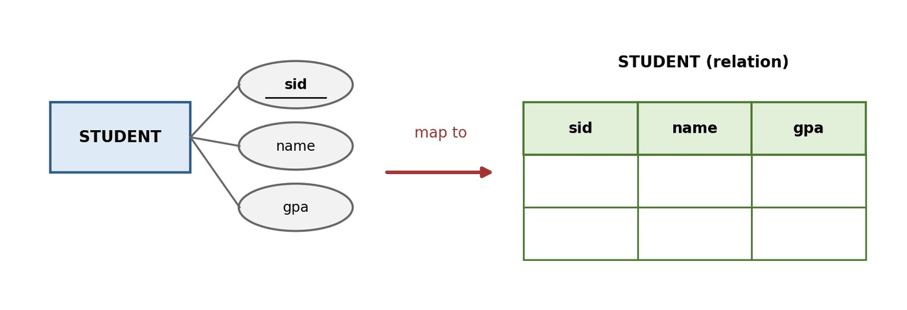
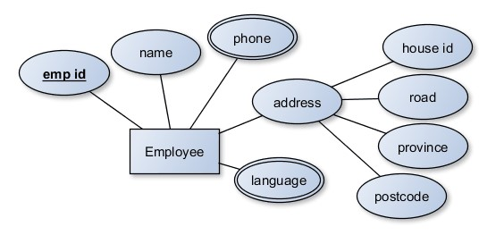
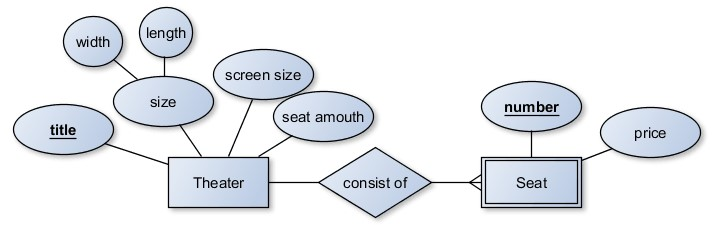
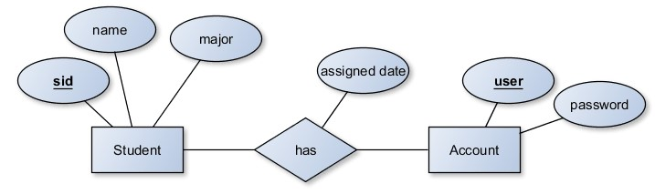
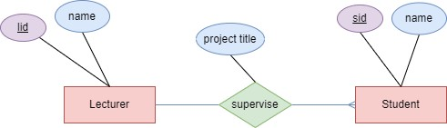
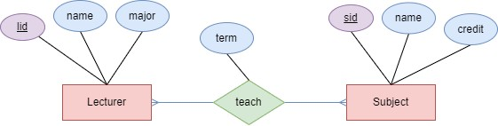
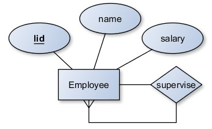
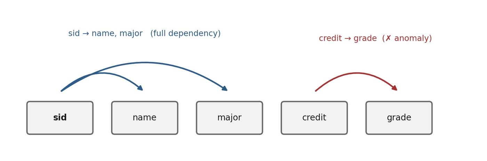
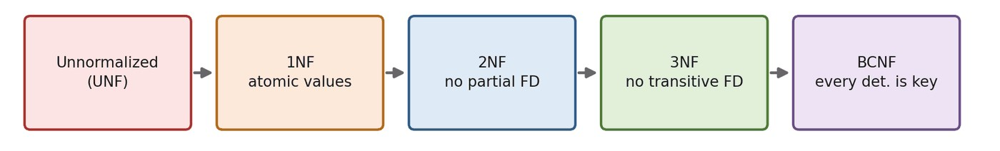

บทที่ 3 · การแปลง ER เป็นตารางเชิงสัมพันธ์ และการทำนอร์มัลไลเซชัน
แบบจำลองเชิงสัมพันธ์ ชนิดของคีย์ กฎความคงสภาพ กฎการแปลง ER ฟังก์ชันการขึ้นต่อกัน และ 1NF → 2NF → 3NF → BCNF
- อธิบายองค์ประกอบของแบบจำลองเชิงสัมพันธ์ และจำแนกชนิดของคีย์ได้
- อธิบายกฎความคงสภาพของเอนทิตีและของการอ้างอิงได้
- แปลงแผนภาพ ER เป็นตารางเชิงสัมพันธ์ได้ครบทุกกรณี
- วิเคราะห์ฟังก์ชันการขึ้นต่อกัน และทำนอร์มัลไลเซชันจนถึง 3NF ได้
- อธิบายเหตุผลของการดีนอร์มัลไลซ์ได้
3.1 แบบจำลองเชิงสัมพันธ์และคำศัพท์
แบบจำลองเชิงสัมพันธ์ (Relational Model) เสนอโดย E. F. Codd (1970) เก็บข้อมูลทั้งหมดในรูปตาราง 2 มิติ
| ศัพท์ทฤษฎี | ทางปฏิบัติ | ตัวอย่างจากกรณีศึกษา |
|---|---|---|
| Relation | Table | ตาราง student |
| Tuple | Row / Record | ข้อมูลของ Rukawa 1 แถว |
| Attribute | Column / Field | gpa |
| Domain | ชนิดข้อมูล + ช่วงค่า | gpa เป็นตัวเลข 0.00–4.00 |
| Degree | จำนวนคอลัมน์ | student มี 5 คอลัมน์ → degree = 5 |
| Cardinality | จำนวนแถว | student มี 22 แถว → cardinality = 22 |
ตารางที่ถูกต้องต้องมี 4 คุณสมบัติ: (1) ทุกช่องเป็นค่าเดี่ยว (atomic) (2) แถวไม่ซ้ำกัน (3) ลำดับแถว/คอลัมน์ไม่มีความหมาย (4) ชื่อคอลัมน์ในตารางเดียวกันไม่ซ้ำ
ลองรันคำสั่งข้างล่างใน DBeaver แล้วบอก degree และ cardinality ของตาราง section
SELECT * FROM section;
section มี 4 คอลัมน์ (secid, subid, lecid, term) → degree = 4 และมี 52 แถว → cardinality = 52
SELECT COUNT(*) AS cardinality FROM section;
| cardinality |
|---|
| 52 |
3.2 ชนิดของคีย์
| คีย์ | ความหมาย | ตัวอย่างจากกรณีศึกษา |
|---|---|---|
| Super Key | กลุ่มคอลัมน์ที่ระบุแถวได้ไม่ซ้ำ อาจมีคอลัมน์เกิน | (stdid), (stdid, name), (stdid, name, gpa) |
| Candidate Key | Super Key ที่ตัดคอลัมน์ใดออกอีกไม่ได้ | stdid (ส่วน (stdid, name) ไม่ใช่) |
| Primary Key | Candidate Key ที่ถูกเลือกใช้ ห้ามซ้ำ ห้าม NULL | stdid, secid |
| Alternate Key | Candidate Key ที่ไม่ได้ถูกเลือก | citizen_id (ถ้ามี) |
| Composite Key | คีย์ที่ใช้ตั้งแต่ 2 คอลัมน์ | (secid, stdid) ของ enroll |
| Foreign Key | อ้างอิง PK ของอีกตาราง (หรือตารางเดียวกัน) | section.subid, section.lecid, subject.pre |
| Surrogate Key | ระบบสร้างให้ ไม่มีความหมายทางธุรกิจ | secid (AUTO_INCREMENT) |
ควรคงที่ไม่เปลี่ยน ขนาดเล็ก ไม่มีความหมายทางธุรกิจ — เบอร์โทรหรืออีเมลไม่เหมาะเป็น PK เพราะผู้ใช้เปลี่ยนได้
ตาราง section(secid, subid, lecid, term) มีกฎ UNIQUE (subid, lecid, term) ด้วย จงระบุ
(ก) Primary Key
(ข) Candidate Key ทั้งหมด
(ค) Alternate Key
(ง) Foreign Key
(ก) secid
(ข) secid และ (subid, lecid, term) — ทั้งสองระบุแถวได้ไม่ซ้ำ และตัดคอลัมน์ออกไม่ได้
(ค) (subid, lecid, term) ซึ่งเป็น Composite Key ด้วย
(ง) subid → subject, lecid → lecturer
3.3 กฎความคงสภาพของข้อมูล
- Entity Integrity — PK ห้าม NULL และห้ามซ้ำ
- Referential Integrity — ค่า FK ต้องตรงกับ PK ที่มีอยู่จริง หรือเป็น NULL
- Domain Integrity — ค่าต้องอยู่ในขอบเขต เช่น gpa 0.00–4.00, grade ∈ {A,B,C,D,F}
- User-Defined Integrity — กฎธุรกิจ เช่น ลงทะเบียนไม่เกิน 22 หน่วยกิต/ภาค (บังคับด้วย Trigger — บทที่ 12)
ลองดูว่า MySQL บังคับกฎเหล่านี้จริงอย่างไร (รันในฐานข้อมูลกรณีศึกษา):
INSERT INTO section (subid, lecid, term) VALUES ('CS999', 't01', '2026-1');INSERT INTO student VALUES ('60001', 'Copy', 'CS', 3.00, NULL);INSERT INTO student VALUES ('80001', 'Over', 'CS', 4.50, NULL);คำสั่ง INSERT INTO enroll VALUES (99, '60001', 'A'); จะเกิดอะไรขึ้น ละเมิดกฎข้อใด (secid มีถึง 52)
ล้มเหลว — ละเมิด Referential Integrity เพราะ secid 99 ไม่มีในตาราง section
INSERT INTO enroll VALUES (99, '60001', 'A');
3.4 กฎการแปลงแผนภาพ ER เป็นตาราง
3.4.1 เอนทิตีปกติ + แอตทริบิวต์อย่างง่าย
1 เอนทิตี → 1 ตาราง, แอตทริบิวต์ → คอลัมน์, แอตทริบิวต์คีย์ → PK

3.4.2 แอตทริบิวต์ประกอบ และ 3.4.3 แอตทริบิวต์พหุค่า

employee ( empid, name, house_id, road, province, postcode ) -- แตกแอตทริบิวต์ประกอบ emp_phone ( empid, phone ) -- พหุค่า → ตารางใหม่ emp_language ( empid, language )
3.4.4 เอนทิตีอ่อนแอ
PK = PK ของเจ้าของ + Partial Key

theater ( title, width, length, size, screen_size, seat_amount ) seat ( title, number, price ) -- title เป็น FK อ้างอิง theater
3.4.5 ความสัมพันธ์ 1:1
นำ PK ฝั่งใดฝั่งหนึ่งไปเป็น FK อีกฝั่ง (นิยมฝั่งที่มีส่วนร่วมแบบสมบูรณ์ เพื่อลด NULL)

3.4.6 ความสัมพันธ์ 1:M
ใส่ FK ไว้ฝั่ง “M (กลุ่ม)” เสมอ

นิสิต 1 คนมีที่ปรึกษาคนเดียว → เก็บ lecid ใน student ได้ 1 ค่า แต่ถ้าเอา stdid ไปไว้ใน lecturer อาจารย์ที่ดูแล 20 คนต้องเก็บ 20 ค่าในช่องเดียว ซึ่งผิดหลัก atomic
3.4.7 ความสัมพันธ์ M:N
สร้างตารางเชื่อม (Junction Table) ใหม่เสมอ PK = PK ทั้งสองฝั่งรวมกัน + แอตทริบิวต์ของความสัมพันธ์เป็นคอลัมน์เพิ่ม

lecturer ( lecid, name, major ) subject ( subid, name, credit ) teach ( lid, sid, term ) -- term เป็นแอตทริบิวต์ของความสัมพันธ์
3.4.8 ความสัมพันธ์วกกลับ
1:M → เพิ่ม FK อ้างอิงตารางเดิม โดยตั้งชื่อคอลัมน์ใหม่ เช่น supervisor_id หรือ pre

| องค์ประกอบใน ER | ผลหลังแปลง |
|---|---|
| เอนทิตีปกติ | ตารางใหม่ 1 ตาราง |
| แอตทริบิวต์อย่างง่าย | 1 คอลัมน์ |
| แอตทริบิวต์ประกอบ | แตกเป็นหลายคอลัมน์ |
| แอตทริบิวต์พหุค่า | ตารางใหม่ PK ผสม |
| แอตทริบิวต์ที่คำนวณได้ | ไม่สร้างคอลัมน์ |
| เอนทิตีอ่อนแอ | ตารางใหม่ PK = PK เจ้าของ + Partial Key |
| 1:1 | FK ฝั่งใดฝั่งหนึ่ง |
| 1:M | FK ฝั่ง M |
| M:N | ตารางเชื่อม PK ผสม |
| วกกลับ 1:M | FK อ้างอิงตารางตัวเอง (ชื่อคอลัมน์ใหม่) |
จงแปลงแผนภาพ ER ต่อไปนี้ (จากบทที่ 2) เป็นตาราง ระบุ PK (ขีดเส้นใต้) และ FK (*)

department ( DID, Name, Room, head_eid* ) -- head of (1:1) → FK อ้างอิง employee employee ( EID, Name, Salary, Birthday, DID* ) -- work at (1:M) → FK ฝั่งพนักงาน emp_phone ( EID*, Phone ) -- ถ้า Phone เป็นพหุค่า project ( PID, Name, Budget, Start_date, End_date ) work_on ( EID*, PID*, Position ) -- M:N → ตารางเชื่อม
หมายเหตุ: head of จะใส่ head_eid ใน department เพราะทุกแผนกต้องมีหัวหน้า (มีส่วนร่วมสมบูรณ์) แต่พนักงานส่วนใหญ่ไม่ได้เป็นหัวหน้า ถ้าใส่ฝั่ง employee จะมี NULL จำนวนมาก
3.5 การแปลงกรณีศึกษาระบบลงทะเบียนเรียน
student ( stdid, name, major, gpa, birthday ) subject ( subid, name, credit, major, pre* ) lecturer ( lecid, name, salary, major ) section ( secid, subid*, lecid*, term ) enroll ( secid*, stdid*, grade )
- นิสิต รายวิชา อาจารย์ เป็นเอนทิตีปกติ → student, subject, lecturer
- วิชาบังคับก่อน เป็นวกกลับ 1:M → คอลัมน์
preอ้างอิงsubject(subid) - กลุ่มเรียน → section มี FK 2 ตัว (subid, lecid) และ secid เป็น Surrogate Key
- การลงทะเบียน นิสิต–กลุ่มเรียน เป็น M:N → ตารางเชื่อม enroll PK ผสม (secid, stdid) + grade
| ตาราง | FK | อ้างอิง | เมื่อลบข้อมูลต้นทาง |
|---|---|---|---|
| subject | pre | subject(subid) | RESTRICT (ไม่กำหนด) |
| section | subid | subject(subid) | ON DELETE CASCADE |
| section | lecid | lecturer(lecid) | ON DELETE CASCADE |
| enroll | secid | section(secid) | ON DELETE CASCADE |
| enroll | stdid | student(stdid) | ON DELETE CASCADE |
ดู FK ที่มีอยู่จริงในฐานข้อมูลได้จาก information_schema:
SELECT TABLE_NAME, CONSTRAINT_NAME, COLUMN_NAME,
REFERENCED_TABLE_NAME, REFERENCED_COLUMN_NAME
FROM information_schema.KEY_COLUMN_USAGE
WHERE TABLE_SCHEMA = DATABASE()
AND REFERENCED_TABLE_NAME IS NOT NULL
ORDER BY TABLE_NAME;| TABLE_NAME | CONSTRAINT_NAME | COLUMN_NAME | REFERENCED_TABLE_NAME | REFERENCED_COLUMN_NAME |
|---|---|---|---|---|
| enroll | enroll_fk_sec | secid | section | secid |
| enroll | enroll_fk_std | stdid | student | stdid |
| section | sec_fk_lec | lecid | lecturer | lecid |
| section | sec_fk_sub | subid | subject | subid |
| subject | sub_fk_pre | pre | subject | subid |
3.6 ความผิดปกติจากการปรับปรุงข้อมูล และฟังก์ชันการขึ้นต่อกัน
สมมติรวมทุกอย่างไว้ในตารางเดียว PK = (stdid, subid) — ไม่ใช่โครงสร้างจริงของกรณีศึกษา
| stdid | stdname | subid | subname | credit | grade |
|---|---|---|---|---|---|
| 60001 | Rukawa | CS001 | Programming | 3 | A |
| 60001 | Rukawa | CS004 | Database | 3 | C |
| 60002 | Sakuragi | CS001 | Programming | 3 | B |
| 60002 | Sakuragi | CS004 | Database | 3 | A |
| 60010 | Gon | CS001 | Programming | 3 | F |
- Insertion Anomaly — เพิ่มรายวิชาใหม่ที่ยังไม่มีคนลงไม่ได้ เพราะ stdid (ส่วนหนึ่งของ PK) เป็น NULL ไม่ได้
- Modification Anomaly — เปลี่ยนชื่อ CS001 ต้องแก้ทุกแถว แก้ไม่ครบข้อมูลขัดแย้ง
- Deletion Anomaly — ลบแถวสุดท้ายของ CS004 ข้อมูลชื่อวิชาและหน่วยกิตหายไปด้วย
ฟังก์ชันการขึ้นต่อกัน (Functional Dependency: FD)
X → Y หมายถึง รู้ค่า X แล้วระบุค่า Y ได้เพียงค่าเดียวเสมอ (X เรียกว่า Determinant) เช่น stdid → name

- Full FD — Y ขึ้นกับ X ทั้งชุด เช่น
(secid, stdid) → grade - Partial FD — Y ขึ้นกับบางส่วนของคีย์ผสม เช่น
(stdid, subid) → stdnameแต่จริง ๆ แค่stdid → stdname - Transitive FD — X → Y และ Y → Z (Y ไม่ใช่คีย์) เช่น
stdid → major → major_head
จากตาราง R(stdid, stdname, subid, subname, credit, grade) ข้างบน จงเขียน FD ทั้งหมด และระบุว่าเป็น Full หรือ Partial
stdid → stdname (Partial — ขึ้นกับบางส่วนของคีย์) subid → subname, credit (Partial) stdid, subid → grade (Full)
3.7 นอร์มัลไลเซชัน
Normalization คือการปรับโครงสร้างตารางให้อยู่ในรูปแบบมาตรฐาน (Normal Form) เพื่อลดความซ้ำซ้อนและกำจัด anomaly — ระดับสูงต้องผ่านเงื่อนไขระดับต่ำก่อนเสมอ

3.7.1 1NF — ค่าเดี่ยว ไม่มีกลุ่มซ้ำ มี PK
| stdid | stdname | subject_list |
|---|---|---|
| 60001 | Rukawa | CS001, CS004 |
| 60002 | Sakuragi | CS001, CS004, CS002 |
ยังไม่เป็น 1NF → แยกค่าที่ซ้ำเป็นแถวใหม่ และใช้ PK ผสม (stdid, subid) ได้ตารางในหัวข้อ 3.6
3.7.2 2NF — 1NF + ไม่มี Partial Dependency
student ( stdid, stdname ) subject ( subid, subname, credit ) enroll ( stdid, subid, grade )
3.7.3 3NF — 2NF + ไม่มี Transitive Dependency
| stdid (PK) | name | major | major_name | major_head |
|---|---|---|---|---|
| 60001 | Rukawa | CS | วิทยาการคอมพิวเตอร์ | Peter Parker |
| 60002 | Sakuragi | CS | วิทยาการคอมพิวเตอร์ | Peter Parker |
| 60005 | NULL | Math | คณิตศาสตร์ | Yoda |
stdid → major → major_name, major_head เปลี่ยนหัวหน้าสาขา CS ต้องแก้ทุกแถวของนิสิต CS → แยกตาราง
student ( stdid, name, major* ) major ( major, major_name, major_head )
3.7.4 BCNF — ตัวกำหนดทุกตัวต้องเป็น Candidate Key
ต่างจาก 3NF เฉพาะกรณีมีคีย์คู่แข่งหลายชุดซ้อนทับกัน เช่น TEACHING(student, subject, lecturer) โดยอาจารย์ 1 คนสอนวิชาเดียว → lecturer → subject แต่ lecturer ไม่ใช่ candidate key จึงแยกเป็น TEACHES(lecturer, subject) และ ENROLLS(student, lecturer)
3.7.5 Denormalization
ยอมให้ซ้ำซ้อนบางส่วนโดยเจตนา เพื่อลดการ JOIN เพิ่มความเร็วการอ่าน (เช่น ระบบรายงาน คลังข้อมูล) ต้องแลกกับความเสี่ยงข้อมูลไม่สอดคล้อง จึงควรมีกลไกรักษา เช่น Trigger
ระบบงานประจำวัน (OLTP) ควรทำให้ถึง 3NF เป็นอย่างน้อย — ตาราง student.gpa ในกรณีศึกษาเป็นตัวอย่างการดีนอร์มัลไลซ์ เพราะ GPA จริงคำนวณได้จาก enroll + subject (บทที่ 7)
กำหนด ORDER_DETAIL(order_id, product_id, product_name, unit_price, qty, customer_id, customer_name, order_date) PK = (order_id, product_id) จงหา FD แล้วแยกตารางให้อยู่ใน 3NF
product_id → product_name, unit_price (Partial) order_id → customer_id, order_date (Partial) customer_id → customer_name (Transitive ผ่าน order_id) order_id,product_id → qty (Full)
product ( product_id, product_name, unit_price ) customer ( customer_id, customer_name ) orders ( order_id, customer_id*, order_date ) order_item ( order_id*, product_id*, qty )
ขั้น 2NF จะได้ product, orders(order_id, customer_id, customer_name, order_date), order_item — แล้วขั้น 3NF แยก customer ออกจาก orders
คำถามท้ายบท
- คีย์และกฎความคงสภาพ
- จงอธิบายความแตกต่างระหว่าง Super Key, Candidate Key, Primary Key และ Alternate Key พร้อมตัวอย่างจากตาราง student (ตัดคอลัมน์ออกได้อีกไหม)
- Super Key — กลุ่มคอลัมน์ใดก็ได้ที่ระบุแถวได้ไม่ซ้ำ เช่น (stdid), (stdid, name), (stdid, major, gpa)
- Candidate Key — Super Key ที่เล็กที่สุด ตัดคอลัมน์ใดออกแล้วจะไม่เป็นคีย์ เช่น (stdid) ถ้ามีเลขบัตรประชาชน (citizen_id) ก็เป็น Candidate Key อีกตัว
- Primary Key — Candidate Key ที่เลือกมาใช้หลัก คือ stdid
- Alternate Key — Candidate Key ที่ไม่ได้ถูกเลือก เช่น citizen_id (ควรกำหนด UNIQUE)
หมายเหตุ: name ไม่ใช่ Candidate Key เพราะชื่อซ้ำได้ (ในข้อมูลมี Gon 2 คน)
- ตาราง section มีกฎ
UNIQUE (subid, lecid, term)จงระบุ Candidate Key ทั้งหมดของตารางนี้ (secid, (subid, lecid, term))Candidate Key มี 2 ชุด คือ secid (เลือกเป็น PK) และ (subid, lecid, term) (Alternate Key ที่บังคับด้วย UNIQUE)
- เหตุใดค่า PK จึงเป็น NULL ไม่ได้ แต่ FK เป็น NULL ได้ ยกตัวอย่างจากคอลัมน์
subject.pre(Entity vs Referential Integrity)Entity Integrity — PK ใช้ระบุตัวตนของแถว ถ้าเป็น NULL (ไม่ทราบค่า) จะระบุแถวไม่ได้ จึงห้าม NULL
Referential Integrity — FK ต้องมีค่าตรงกับ PK ที่มีอยู่ หรือเป็น NULL ซึ่งหมายถึง “ไม่มีความสัมพันธ์” เช่น
subject.preของ CS001 Programming เป็น NULL เพราะไม่มีวิชาบังคับก่อนเฉลยSELECT subid, name, pre FROM subject WHERE pre IS NULL;
▸ ผลลัพธ์ (5 แถว)subid name pre CS001 Programming NULL EN001 English NULL MA001 Mathematics NULL PH001 Physics NULL TH001 Thai NULL - จงอธิบายกฎความคงสภาพ 4 ประเภท และระบุว่าแต่ละประเภทบังคับใช้ด้วยคำสั่ง SQL ใด (PK / FK / CHECK / Trigger)
- Entity Integrity — PK ไม่ซ้ำและไม่เป็น NULL →
PRIMARY KEY - Referential Integrity — FK ต้องอ้างถึงแถวที่มีอยู่จริง →
FOREIGN KEY … REFERENCES - Domain Integrity — ค่าต้องอยู่ในขอบเขตที่กำหนด → ชนิดข้อมูล,
NOT NULL,CHECK,DEFAULT - Business Rule (User-defined) — กฎเฉพาะขององค์กร เช่น ห้ามลงทะเบียนเกิน 40 คน →
CHECKหรือTRIGGER(บทที่ 12)
- Entity Integrity — PK ไม่ซ้ำและไม่เป็น NULL →
- คำสั่ง
INSERT INTO enroll VALUES (99, '60001', 'A');จะเกิดอะไรขึ้น ละเมิดกฎข้อใด (secid 99 ไม่มีอยู่)เกิด Error 1452 เพราะไม่มี section รหัส 99 ในตาราง section — ละเมิด Referential Integrity (FK enroll_fk_sec)
เฉลยINSERT INTO enroll VALUES (99, '60001', 'A');
✖ Error Code: 1452. Cannot add or update a child row: a foreign key constraint fails (`std_66011200`.`enroll`, CONSTRAINT `enroll_fk_sec` FOREIGN KEY (`secid`) REFERENCES `section` (`secid`) ON DELETE CASCADE) - เหตุใดการใช้อีเมลหรือเบอร์โทรเป็น Primary Key จึงไม่เหมาะสม (คงที่ เล็ก ไม่มีความหมายทางธุรกิจ)
PK ที่ดีควร ไม่เปลี่ยนแปลง สั้น และไม่เป็น NULL — อีเมล/เบอร์โทรเปลี่ยนได้ (ต้องแก้ FK ทุกตารางที่อ้างถึง) บางคนไม่มีหรือมีหลายค่า ยาวทำให้ดัชนีใหญ่ และอาจถูกนำไปใช้ใหม่โดยคนอื่น จึงควรใช้รหัสที่สร้างขึ้นเอง แล้วกำหนดอีเมลเป็น UNIQUE แทน
- แปลง ER เป็นตาราง
- จงแปลง ER ของ Employee (emp_id, name, phone หลายค่า, gender, birthday, address, position) เป็นตาราง ระบุ PK และ FK (Multivalued → ตารางใหม่)
employee(emp_id, name, gender, birthday, address, position)employee_phone(emp_id, phone)— PK ผสม, emp_id เป็น FK อ้างอิง employee - จงแปลง ER ของ Employee ที่มี address เป็น Composite (house id, road, province, postcode) และ language เป็น Multivalued เป็นตาราง (3 ตาราง)
Composite ไม่ต้องแยกตาราง ใช้ส่วนย่อยเป็นคอลัมน์ ส่วน Multivalued แยกตาราง:
employee(emp_id, name, house_id, road, province, postcode)·employee_language(emp_id, language)ถ้าเลือกแยกที่อยู่เป็นตาราง (เช่น พนักงานมีหลายที่อยู่) จะได้ 3 ตาราง: employee, address(emp_id, addr_no, house_id, road, province, postcode), employee_language
- จงแปลง ER ของโรงภาพยนตร์ (Theater–Seat) และอธิบายว่า PK ของตาราง seat ประกอบด้วยคอลัมน์ใด เพราะเหตุใด (PK เจ้าของ + Partial Key)
theater(theater_name, width, length, screen_size)·seat(theater_name, seat_no, price)PK ของ seat = (theater_name, seat_no) เพราะ seat เป็นเอนทิตีอ่อนแอ — seat_no เพียงอย่างเดียวซ้ำได้ในแต่ละโรง ต้องรวม PK ของเจ้าของ (theater_name ซึ่งเป็น FK ด้วย)
- จงแปลงความสัมพันธ์ 1:1 Student has Account (assigned date) เป็นตาราง เปรียบเทียบการรวมเป็น 1 ตาราง กับแยก 2 ตาราง (UNIQUE)
แยก 2 ตาราง:
student(stdid, name, …)·account(username, password_hash, stdid UNIQUE FK, assigned_date)— UNIQUE บน stdid ทำให้เป็น 1:1 เหมาะเมื่อไม่ใช่นิสิตทุกคนที่มีบัญชี (ไม่ต้องมี NULL จำนวนมาก) และแยกข้อมูลอ่อนไหวได้รวม 1 ตาราง:
student(stdid, name, username UNIQUE, password_hash, assigned_date)— ง่าย ไม่ต้อง JOIN เหมาะเมื่อทุกคนมีบัญชี - จงแปลงความสัมพันธ์ 1:M Lecturer supervise Student (project title) และเติมข้อมูลตัวอย่าง 4 แถว รวมนิสิตที่ยังไม่มีที่ปรึกษา (FK ฝั่ง M, NULL ได้)
ใส่ FK และแอตทริบิวต์ของความสัมพันธ์ไว้ฝั่ง M:
student(stdid, name, lecid FK→lecturer, project_title)เฉลย-- stdid name lecid project_title -- 60001 Rukawa t01 Smart Library -- 60002 Sakuragi t01 Chatbot for Freshmen -- 60003 Mitsui t02 Parking Detector -- 60004 Sendoh NULL NULL <- ยังไม่มีที่ปรึกษา
- จงแปลงความสัมพันธ์วกกลับ Employee supervise Employee และอธิบายว่าหัวหน้าสูงสุดจะมีค่า supervise_id เป็นอะไร (NULL)
employee(emp_id, name, supervise_id FK→employee(emp_id))— FK อ้างอิงตารางตัวเอง หัวหน้าสูงสุดไม่มีหัวหน้า จึงมี supervise_id เป็น NULL (เหมือน subject.pre ในกรณีศึกษา) - จงแปลงความสัมพันธ์ M:N Lecturer teach Subject (term) เป็นตาราง แล้วเปรียบเทียบการใช้ PK ผสม กับการสร้าง teachid เป็น Surrogate Key (UNIQUE (lid, sid, term))
PK ผสม:
teach(lid, sid, term)— ไม่ต้องเพิ่มคอลัมน์ แต่ตารางที่อ้างถึง (เช่น enroll) ต้องมี FK 3 คอลัมน์Surrogate Key:
teach(teachid, lid, sid, term, UNIQUE(lid, sid, term))— FK ในตารางอื่นสั้นเหลือคอลัมน์เดียว (แบบเดียวกับ section.secid ในกรณีศึกษา) แต่ต้องเพิ่ม UNIQUE ไม่เช่นนั้นจะบันทึกการสอนซ้ำได้ - จงแปลง ER ระบบข้อมูลบุคลากร (Department–Employee–Project) เป็นตาราง ระบุ PK และ FK ทุกตาราง (head of / work at / work on)
department(dept_id, name, head_emp_id FK→employee UNIQUE)— head of (1:1)employee(emp_id, name, salary, dept_id FK→department)— work at (1:M)project(proj_id, name, budget, dept_id FK→department)work_on(emp_id FK, proj_id FK, hours)— work on (M:N)
- จงแปลง ER ของ AmICrazy Software House (ภาพในแบบฝึกหัด Lab 2) เป็นตารางให้ครบทุกความสัมพันธ์ (hire, meeting, work on, request, supervise)
department(dept_id, name)employee(emp_id, name, salary, dept_id FK, supervisor_id FK→employee)— supervise วกกลับcustomer(cus_id, name)·customer_phone(cus_id, phone)project(proj_id, name, budget, start_date, duration CHECK ≤ 100, finish_date, cus_id FK)— hire (1:M)meeting(cus_id, emp_id, meet_date, place)— M:N ที่ประชุมได้หลายครั้ง จึงใส่วันที่ใน PKwork_on(emp_id, proj_id, role)leave_request(emp_id, leave_date, type, days CHECK ≤ 5)— request (เอนทิตีอ่อนแอ)
- จงแปลง ER ของคณะวิทยาการสารสนเทศ เป็นตารางให้ครบทุกความสัมพันธ์ (keyword และ presentation)
major(major_id, name)·lecturer(lec_id, name, major_id FK)project(proj_id, title, status, start_term, finish_term)·project_keyword(proj_id, keyword)student(std_id, name, major_id FK, proj_id FK)— โปรเจคมีนิสิต 1–2 คนsupervise(lec_id, proj_id, position)— ที่ปรึกษาหลัก/ร่วมpresentation(proj_id, exam_type, exam_date, result)— เอนทิตีอ่อนแอcommittee(proj_id, exam_type, lec_id)— กรรมการสอบ (FK ผสมไป presentation)
- FD และนอร์มัลไลเซชัน
- จงยกตัวอย่าง Insertion, Modification และ Deletion Anomaly จากตาราง
R(stdid, stdname, subid, subname, credit, grade)(PK = (stdid, subid))- Insertion — เพิ่มวิชาใหม่ที่ยังไม่มีคนลงไม่ได้ เพราะ stdid (ส่วนของ PK) จะเป็น NULL
- Modification — เปลี่ยนชื่อวิชา Java ต้องแก้ทุกแถวที่มีคนลง ถ้าแก้ไม่ครบจะมีชื่อวิชาไม่ตรงกัน
- Deletion — ลบการลงทะเบียนของนิสิตคนสุดท้ายที่เรียนวิชาหนึ่ง ข้อมูลวิชานั้น (ชื่อ หน่วยกิต) หายไปด้วย
- จงอธิบายความแตกต่างของ Full, Partial และ Transitive Functional Dependency พร้อมตัวอย่าง (X → Y)
- Full FD — Y ขึ้นกับ X ทั้งชุด ตัดส่วนใดออกไม่ได้ เช่น (stdid, subid) → grade
- Partial FD — Y ขึ้นกับเพียงบางส่วนของคีย์ผสม เช่น (stdid, subid) → stdname แต่จริง ๆ stdid → stdname ก็พอ
- Transitive FD — X → Y และ Y → Z โดย Y ไม่ใช่คีย์ ทำให้ X → Z ทางอ้อม เช่น stdid → major และ major → major_head
- กำหนด
ORDER_DETAIL(order_id, product_id, product_name, unit_price, qty, customer_id, customer_name, order_date)จงระบุ FD ทั้งหมด (PK = (order_id, product_id))- (order_id, product_id) → qty — Full FD
- product_id → product_name, unit_price — Partial FD
- order_id → customer_id, order_date — Partial FD
- customer_id → customer_name — Transitive (order_id → customer_id → customer_name)
หมายเหตุ: ถ้าราคาขายแต่ละครั้งต่างกันได้ ควรเก็บราคาขาย ณ วันสั่งไว้ที่ (order_id, product_id) ด้วย
- จากข้อที่แล้ว จงทำนอร์มัลไลเซชันจนถึง 3NF แสดงโครงสร้างในแต่ละขั้น (1NF → 2NF → 3NF) (แยกตามตัวกำหนด)
1NF — ตารางเดิมทุกช่องมีค่าเดียวอยู่แล้ว PK = (order_id, product_id)
2NF — กำจัด Partial FD:
order_line(order_id, product_id, qty)·product(product_id, product_name, unit_price)·orders(order_id, customer_id, customer_name, order_date)3NF — กำจัด Transitive FD ใน orders:
orders(order_id, customer_id FK, order_date)·customer(customer_id, customer_name)— ได้ 4 ตาราง: customer, orders, product, order_line - ตาราง
student(stdid, name, major, major_name, major_head)อยู่ในนอร์มัลฟอร์มใด และต้องแก้อย่างไรให้อยู่ใน 3NF (Transitive)อยู่ใน 2NF (PK มีคอลัมน์เดียว จึงไม่มี Partial FD) แต่ไม่อยู่ใน 3NF เพราะมี Transitive FD: stdid → major → major_name, major_head
แก้โดยแยก:
student(stdid, name, major FK)·major(major, major_name, major_head) - ตาราง
TEACHING(student, subject, lecturer)ที่อาจารย์ 1 คนสอนเพียงวิชาเดียว อยู่ใน 3NF แต่ไม่อยู่ใน BCNF เพราะเหตุใด (lecturer → subject)มี FD: (student, subject) → lecturer และ lecturer → subject คีย์คือ (student, subject) หรือ (student, lecturer) — ทุกคอลัมน์เป็นส่วนของคีย์ จึงผ่าน 3NF แต่ BCNF กำหนดว่าตัวกำหนดทุกตัวต้องเป็น Super Key ซึ่ง lecturer ไม่ใช่ จึงไม่ผ่าน BCNF
แยกเป็น
lecturer_subject(lecturer, subject)และstudent_lecturer(student, lecturer) - คอลัมน์
student.gpaในกรณีศึกษาเป็นการดีนอร์มัลไลซ์หรือไม่ เพราะเหตุใด และมีความเสี่ยงอะไร (คำนวณได้จาก enroll + subject)เป็น — gpa คำนวณได้จากเกรดใน enroll และหน่วยกิตใน subject การเก็บซ้ำไว้ทำให้อ่านเร็ว แต่เสี่ยงต่อความไม่สอดคล้อง เมื่อแก้เกรดแล้วลืมคำนวณ gpa ใหม่ — ในกรณีศึกษาค่าก็ไม่ตรงกันจริง (ดูบทที่ 7 วิว v_student_gpa)
เฉลยSELECT s.stdid, s.name, s.gpa AS stored_gpa, ROUND(SUM(sub.credit * CASE e.grade WHEN 'A' THEN 4 WHEN 'B' THEN 3 WHEN 'C' THEN 2 WHEN 'D' THEN 1 ELSE 0 END) / SUM(sub.credit), 2) AS calc_gpa FROM student s JOIN enroll e ON s.stdid = e.stdid JOIN section sec ON e.secid = sec.secid JOIN subject sub ON sec.subid = sub.subid WHERE e.grade IS NOT NULL GROUP BY s.stdid, s.name, s.gpa ORDER BY s.stdid;▸ ผลลัพธ์ (แสดง 6 จาก 17 แถว)stdid name stored_gpa calc_gpa 60001 Rukawa 3.75 3.48 60002 Sakuragi NULL 2.84 60003 Mitsui 2.00 2.00 60004 Sendoh 3.98 3.38 60005 NULL 2.78 2.96 60006 Nobita 1.55 0.65 - ระบบรายงานยอดขายเก็บ
total_amountไว้ในตารางคำสั่งซื้อ แทนการคำนวณใหม่ทุกครั้ง มีข้อดีข้อเสียอย่างไร ควรมีมาตรการใดรองรับ (Trigger)ข้อดี — รายงานเร็ว ไม่ต้อง SUM รายการทุกครั้ง และเก็บยอด ณ เวลาขายได้ ข้อเสีย — ข้อมูลซ้ำซ้อน เสี่ยงยอดไม่ตรงกับรายการเมื่อแก้รายการ
มาตรการ — ใช้ทริกเกอร์ปรับ total_amount อัตโนมัติเมื่อ INSERT/UPDATE/DELETE รายการ (บทที่ 12) ทำทุกอย่างในทรานแซกชัน และมีคำสั่งตรวจ/คำนวณยอดใหม่เป็นระยะ